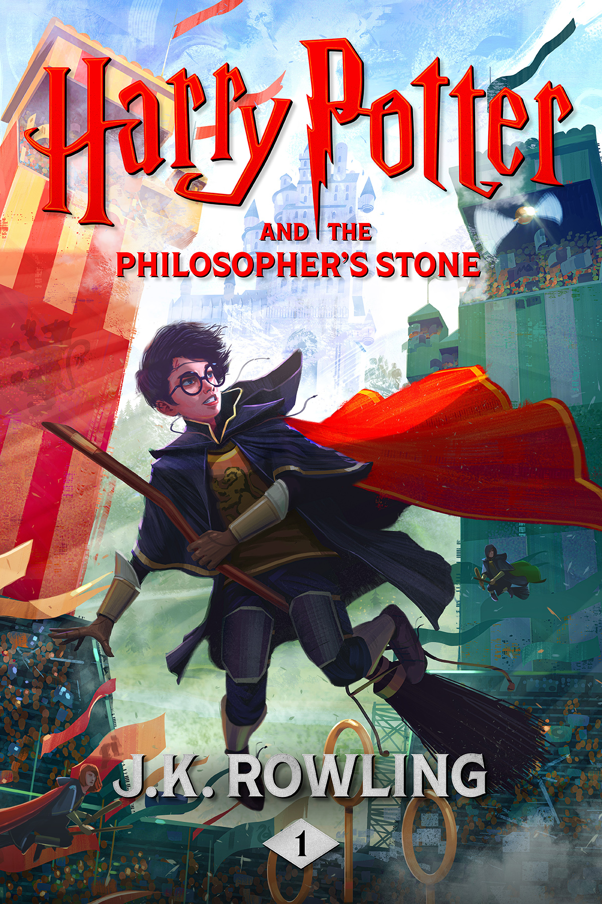
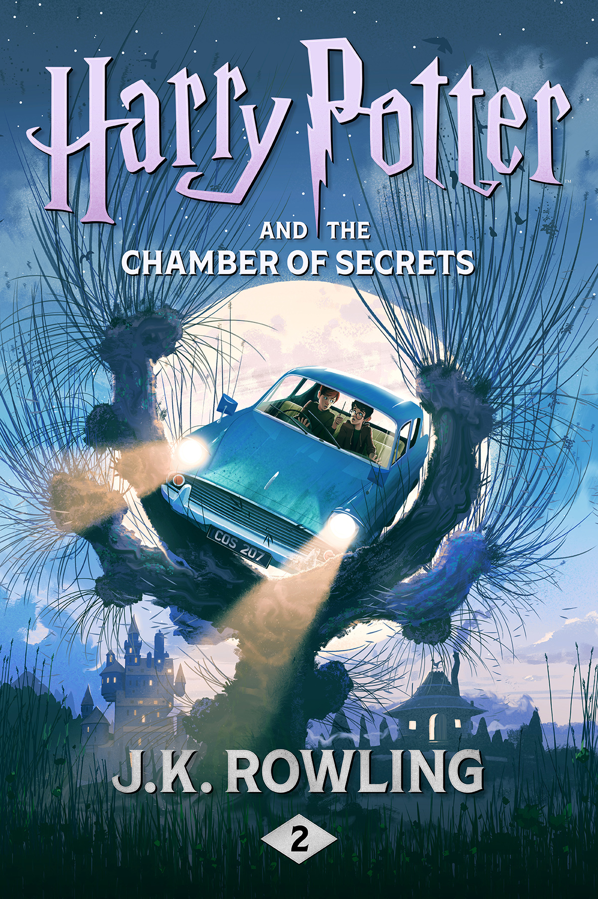
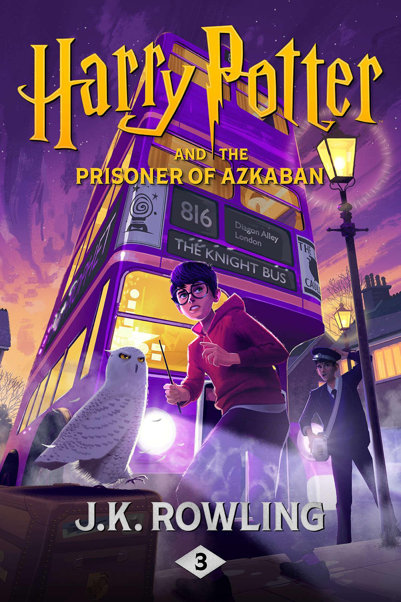
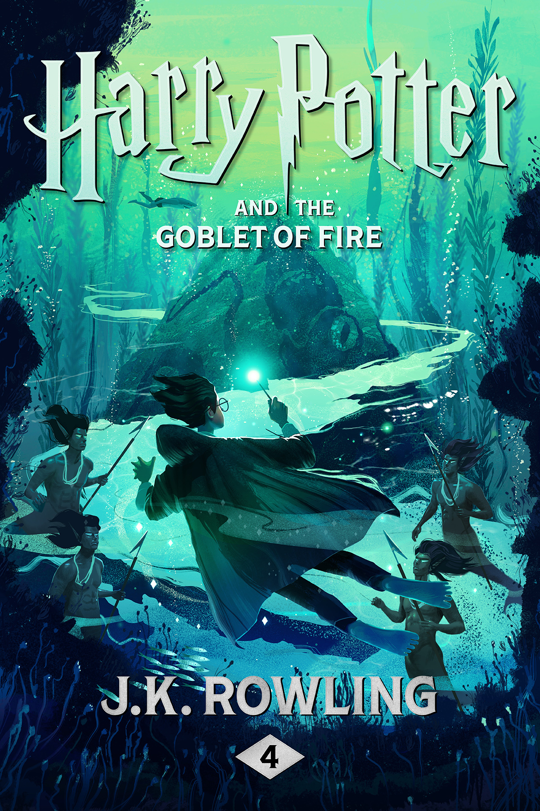
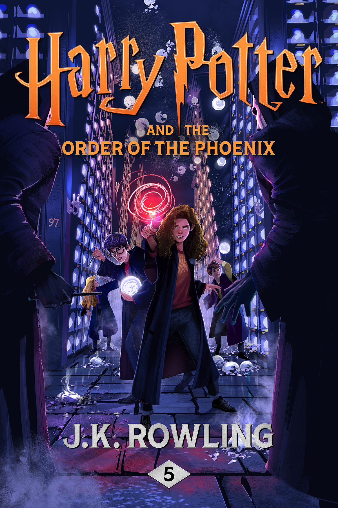
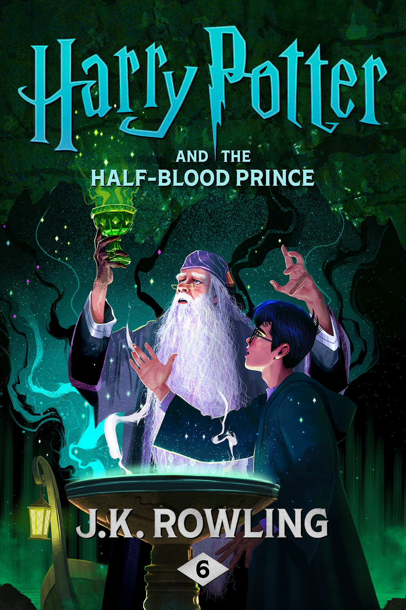
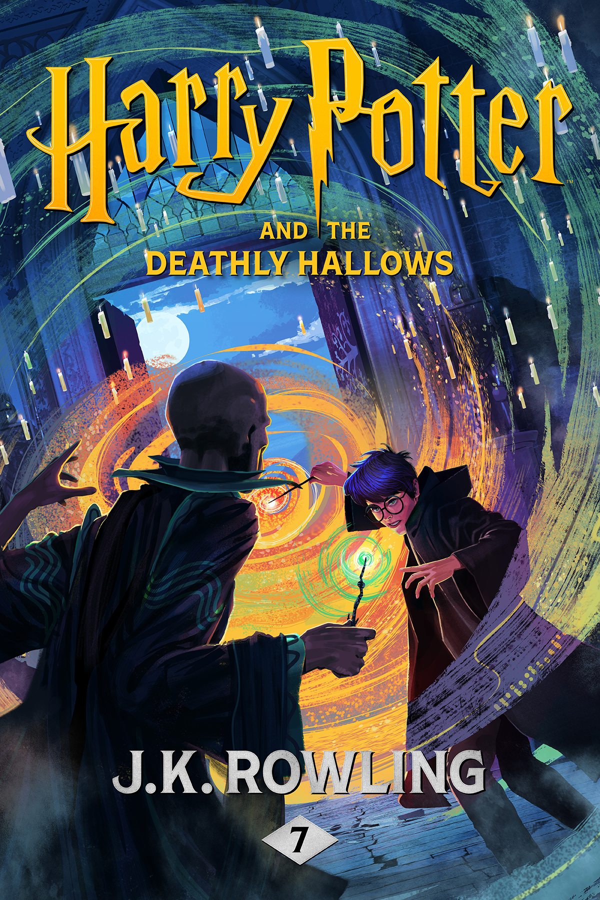

Harry Potter e a Pedra Filosofal

Harry Potter e a Pedra Filosofal introduz o jovem Harry, um órfão que descobre, aos 11 anos, que é um bruxo. Convidado para estudar em Hogwarts, ele faz amigos (Ron Weasley e Hermione Granger) e inimigos (Draco Malfoy), enquanto desvenda segredos sobre seu passado e a misteriosa Pedra Filosofal. O livro é uma porta de entrada encantadora ao mundo mágico, com uma narrativa leve, cheia de humor e aventura. A amizade, a coragem e a descoberta da identidade são temas centrais. Apesar de ser voltado para um público jovem, sua simplicidade cativa leitores de todas as idades, estabelecendo o tom da saga.
Harry Potter e a Câmara Secreta

No segundo livro, Harry retorna a Hogwarts enfrentando novos perigos: a Câmara Secreta foi aberta, e um monstro ameaça os alunos. Com a ajuda de Ron e Hermione, ele investiga o mistério, que envolve o passado de Voldemort e a história da escola. A narrativa intensifica o suspense e aprofunda o universo mágico, introduzindo elementos como o diário de Tom Riddle e a casa Sonserina. A lealdade e o preconceito (especialmente contra os "nascidos trouxas") são temas explorados, enquanto o tom começa a ficar mais sombrio, mantendo o charme da aventura juvenil.
Harry Potter e o Prisioneiro de Azkaban

Considerado por muitos o melhor da saga, O Prisioneiro de Azkaban apresenta Sirius Black, um suposto assassino que escapa da prisão de Azkaban e parece estar atrás de Harry. A trama explora o passado dos pais de Harry e introduz os dementadores, criaturas aterrorizantes que simbolizam o medo e a depressão. A narrativa é mais complexa, com reviravoltas emocionantes, como o uso do Vira-Tempo e a revelação sobre os Marotos. Temas como família, confiança e redenção brilham, enquanto o livro marca uma transição para um tom mais maduro.
Harry Potter e o Cálice de Fogo

Neste livro, Harry é misteriosamente inscrito no Torneio Tribruxo, uma competição perigosa entre escolas de magia. A trama expande o mundo mágico, apresentando novas escolas (Beauxbatons e Durmstrang) e aprofundando a ameaça do retorno de Voldemort. Com um enredo mais longo e denso, o livro equilibra ação, romance incipiente e intrigas políticas. A volta de Voldemort no final eleva o tom sombrio, enquanto temas como rivalidade, sacrifício e corrupção são explorados. É um ponto de virada, deixando de lado a inocência dos primeiros livros.
Harry Potter e a Ordem da Fênix

O livro mais longo da saga mostra Harry lidando com a descrença do mundo mágico sobre o retorno de Voldemort. Frustrado, ele enfrenta o autoritarismo de Dolores Umbridge, nova professora de Hogwarts, e forma a Armada de Dumbledore para resistir. A narrativa foca na burocracia opressiva, na luta contra a injustiça e no amadurecimento emocional de Harry, que lida com raiva e isolamento. Apesar de algumas críticas ao ritmo mais lento, o livro é rico em desenvolvimento de personagens e prepara o palco para a guerra iminente.
Harry Potter e o Enigma do Príncipe

Com a guerra contra Voldemort em curso, Harry descobre um livro de poções anotado pelo misterioso Príncipe Mestiço, enquanto tenta desvendar os planos de Draco Malfoy e os segredos do passado de Voldemort. O livro equilibra mistério, romance e tragédia, com momentos marcantes como a morte de um personagem importante. A narrativa explora amor, traição e sacrifício, aprofundando a mitologia das Horcruxes. É um dos livros mais emocionais, com um final devastador que intensifica a urgência da batalha final
Harry Potter e as Relíquias da Morte

O capítulo final acompanha Harry, Ron e Hermione em uma missão para destruir as Horcruxes de Voldemort, enquanto o mundo mágico desmorona sob o domínio do vilão. Fora de Hogwarts, a narrativa é intensa, com momentos de desespero, lealdade e esperança. A busca pelas Relíquias da Morte adiciona uma camada mítica, e o confronto final em Hogwarts é épico. Temas como morte, redenção e o poder das escolhas culminam em um desfecho satisfatório, que amarra as pontas soltas da saga e celebra o triunfo do bem.